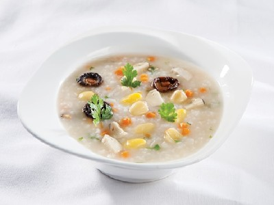

|  |
Food's name: Lotus seed porridge▸ Ingredients:
▸ Time to prepare: 40 minutes ▸ Approx quantity: 1 small bowl |
▸ Detailed recipe:
- Wash the glutinous rice and soak it in water for about 20 minutes.
- Split the lotus seeds in half, remove the heart, soak the lotus seeds in water for about 1 hour and then take them out.
- Put plain rice in 400ml of boiled water, add lotus seeds and vermicelli and cook until it becomes porridge.
- Seasoning to taste
- Eat lotus seed porridge into cooked meals, eat porridge while it is still warm to warm the stomach, and increase the effectiveness of stomach pain.
- Patients eat lotus seed porridge several times a week to improve their condition.
▸ Calories and related information: